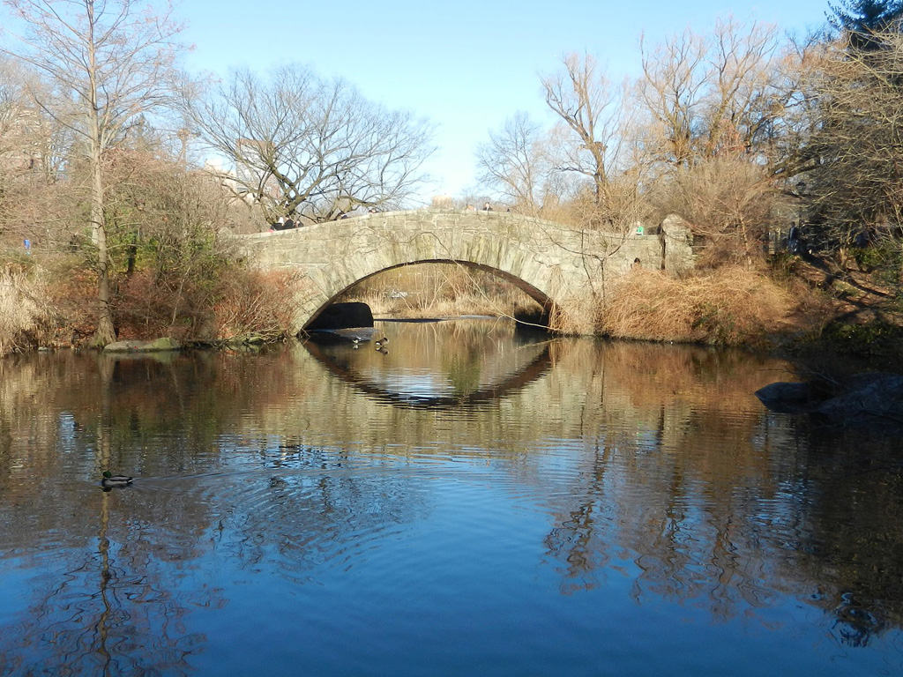

Nueva York - Central Park
Descripción: Esta foto del Estanque del Conservatorio en Central Park en Ciudad de Nueva York fue tomada en Octubre 22, 2021 con una cámara Canon EOS 30D.
Fotos relacionadas

Compartir:


Reseñas
Por Ricardo 15 Septiembre, 2021
Tranquilo con el HDR amigo
Por Susana 1 Octubre, 2021
Inga tu roña amo Central Park